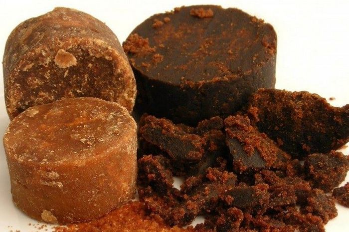

<< Daftar Resep
Mengenal Bahan Makanan
Gula Merah

Gula merah adalah pemanis yang dibuat dari nira yang berasal dari tandan bunga jantan pohon enau.
Gula merah biasanya juga diasosiasikan dengan segala jenis gula yang dibuat dari nira, yaitu cairan yang dikeluarkan dari bunga pohon dari keluarga palma, seperti kelapa, aren, dan siwalan.
Gula merah versi bubuk sering pula disebut sebagai Gula semut atau Gula Kristal. Dinamakan gula semut karena bentuk gula ini mirip rumah semut yang bersarang di tanah
Kandungan gula merah
Dalam setiap 100 gram bahwa gula merah mengandung
- kalsium: 90 mg
- zat besi: 4 mg
- sisanya karoten
- Vitamin A, B12, C, E
- Float
- Garam mineral
- Protein kasar.